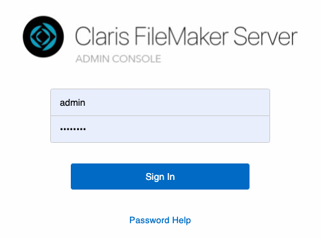
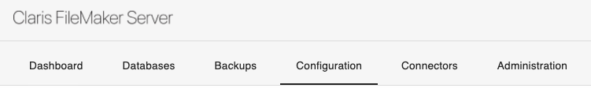
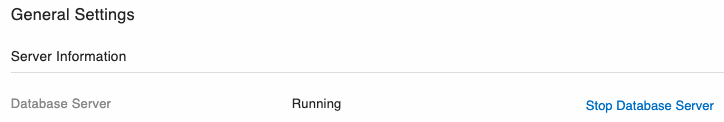
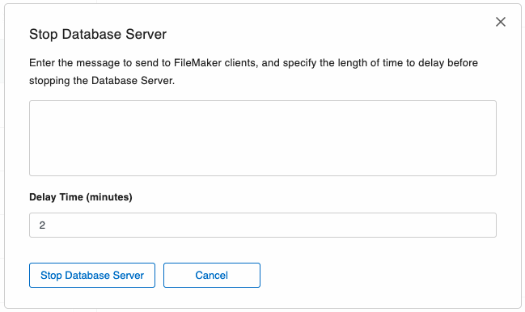

Shutting down your FileMaker Server
Failure to correctly exit FileMaker Server before powering down or rebooting your server computer can result in data loss or, worse, corrupted data files.
-
See also: Claris FileMaker Server 19 Help
Shutting down or Rebooting your Server Computer
-
Your server computer, running FileMaker Server software, should be kept on and accessible at all times.
-
You should disable hibernation and/or sleep modes.
-
In the event you need to shutdown or reboot the server, follow these steps.
Warning! Before using your server computer's shutdown controls, follow these steps to safely shutdown the FileMaker Server software first. Otherwise, you run the risk of possible data loss and potentially damage your FrameReady database files.
If you are notified of any System Updates, then always shut down the FileMaker Server software first before installing the updates!
-
Exit FrameReady on all guest computers.
-
On your server computer, open the FileMaker Server web admin. There should be a shortcut on the Desktop after installation; double-click to open.
See: Opening the FileMaker Server Admin Console -
You must log into the FileMaker Server web admin console. Your web browser may already have the login credentials saved. Click Sign In to continue.

-
Click Configuration in the nav bar.

-
Under General Settings, click the blue Stop Database Server button.

-
In the dialog that appears, you can enter a message to send to FileMaker clients, and specify the length of time to delay before stopping the database server.
If you have exited FrameReady on all guest computers, then you can change the delay to zero.
Important: If you specify a delay time of 0, then clients are disconnected immediately and they may lose unsaved work!

-
Click the Stop Database Server button. When the button turns grey, you can safely shutdown or reboot the server computer.
If you have large files or files with many connected clients, then the process of stopping the Database Server may take several minutes.
Important: Power failures, flickers, brownouts, and power surges can damage files if FrameReady is operating. Install a surge protector and uninterruptible power supply on your FrameReady server.
Important: Do not point any live-sync backup solutions such as One Drive, Dropbox etc to the live FileMaker Server FrameReady folder as this will damage your data. Instead, point it to the default Backup folder.
© 2023 Adatasol, Inc.